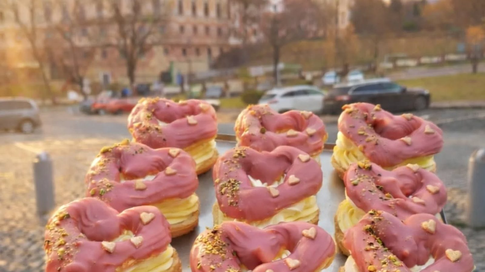
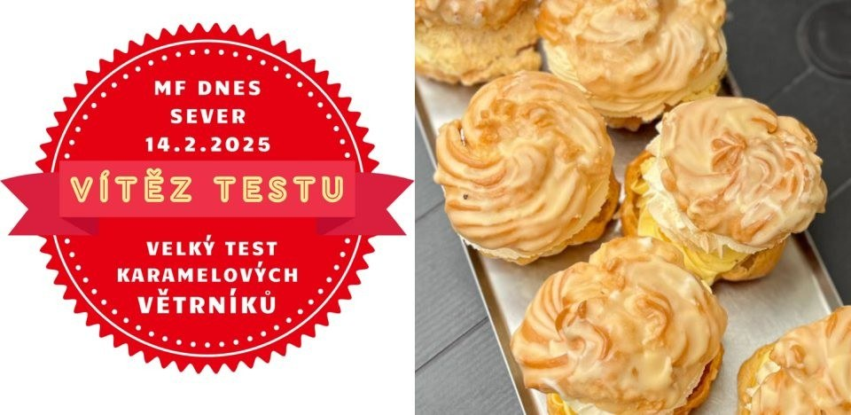
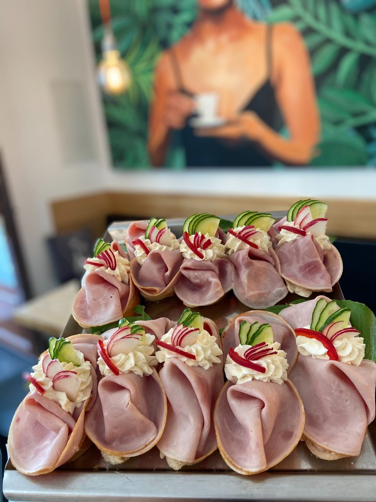
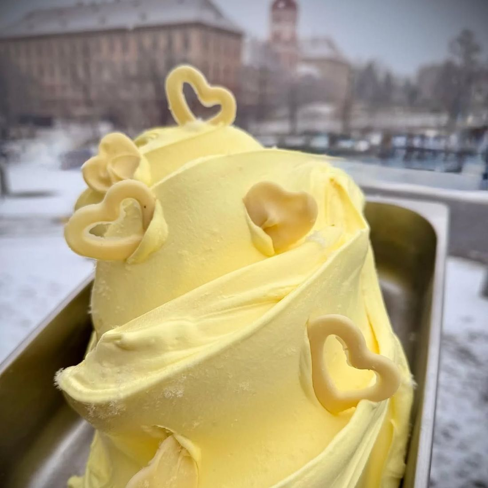
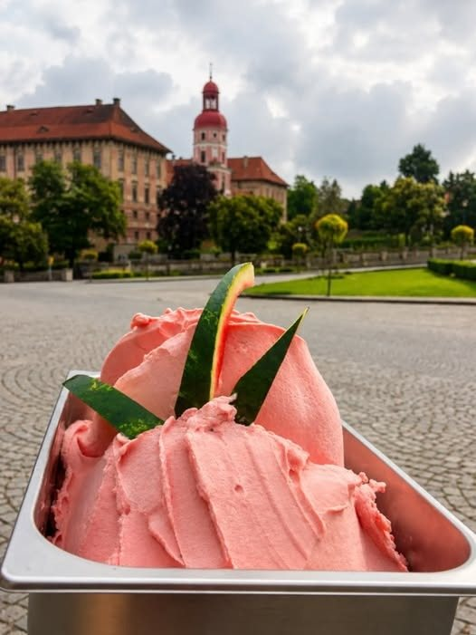
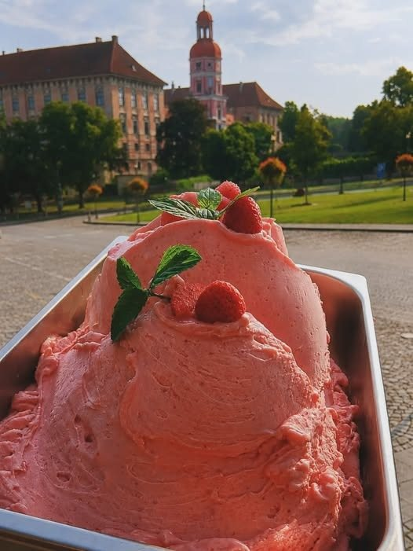
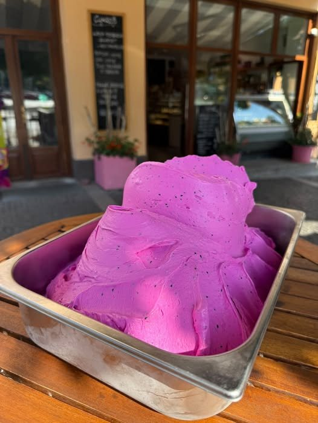
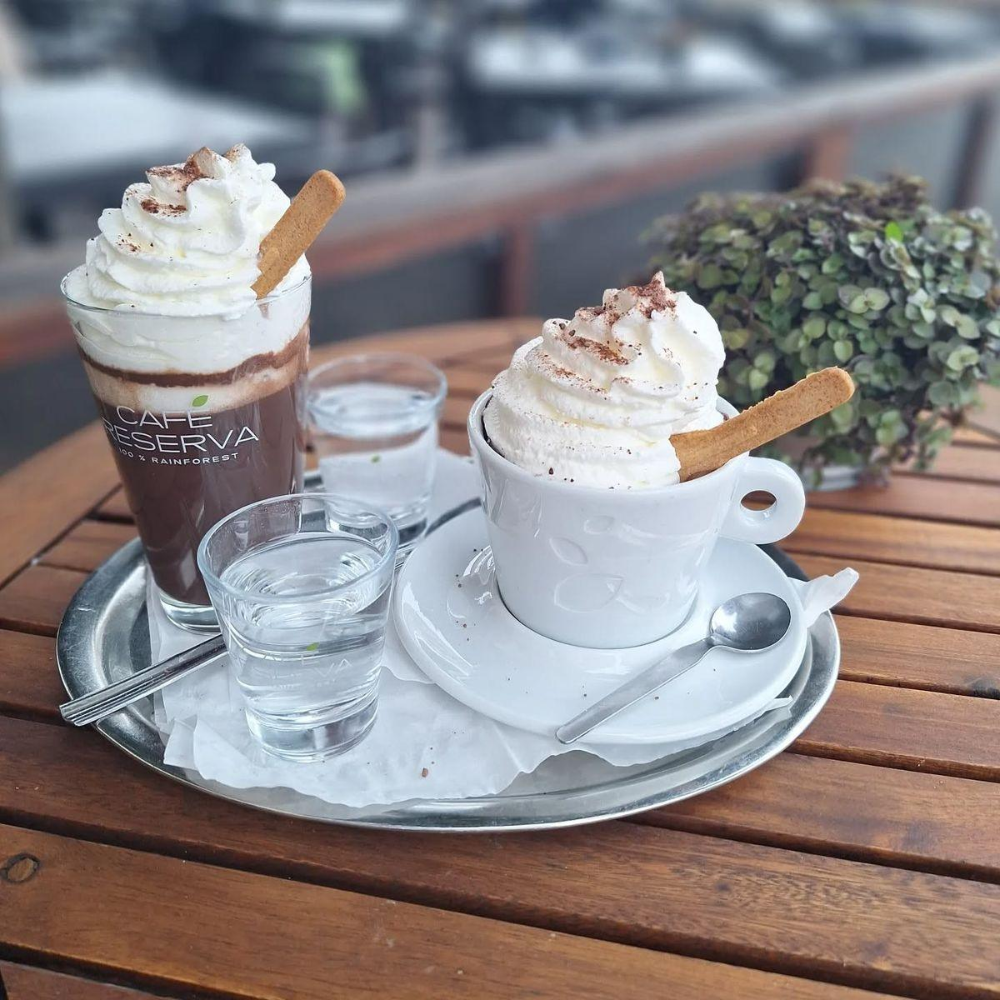
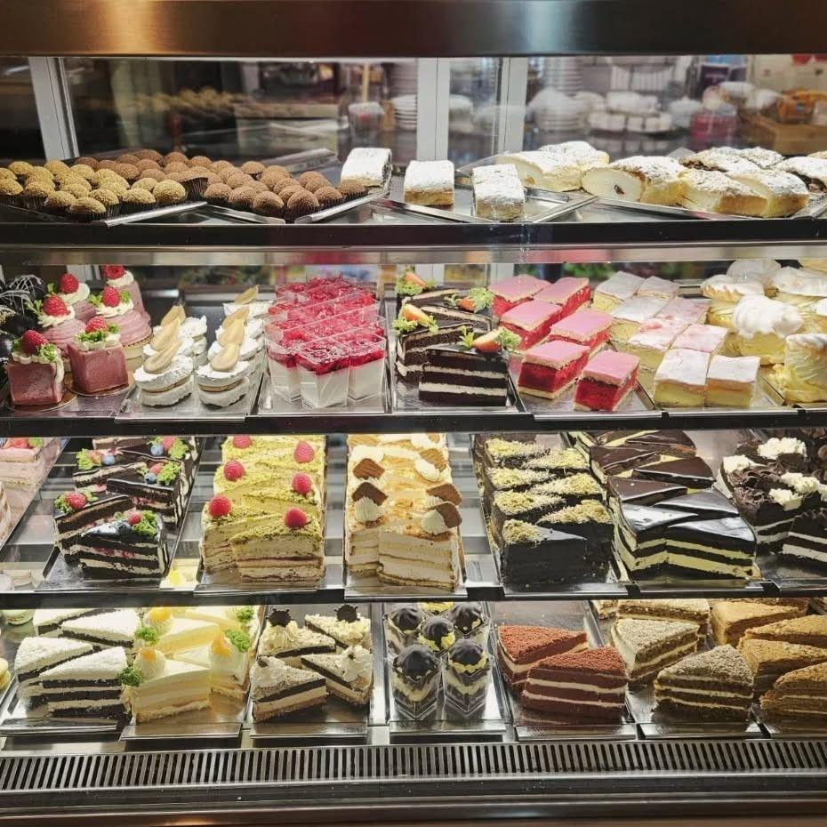

Roudnice nad Labem · Karlovo náměstí
Cukrárna a kavárna v srdci města
Každý den pro Vás připravujeme čerstvé dorty, zákusky a chlebíčky. Máme vlastní výrobu zmrzlin a nejlepší karamelový větrník v Čechách.
- Dnes
- 7:30 — 18:00
- Snídaně
- do 12:00 každý den od otevření
- Objednávky
- 776 205 005
- Hodnocení
- 4,5 / 5 321 recenzí na Google
Vlastní výroba
od roku 1998
Všechno, co najdete ve vitríně, vzniká u nás v cukrárně. Každé ráno znovu, žádné polotovary.
Vítěz testu
MF DNES Sever
Náš karamelový větrník získal 14. února 2025 první místo ve velkém testu karamelových větrníků.
Suroviny
z okolí
Mléko vozíme ze Straškova, karamel si vaříme sami a zmrzlinu děláme od základu.
Od roku 1998
Poctivé řemeslo
na Karlově náměstí
CUKROŠ patří k Roudnici nad Labem už více než čtvrt století. Pracujeme s regionálními výrobky, používáme kvalitní suroviny a všechno, co u nás najdete ve vitríně, vzniká v naší vlastní výrobě — každé ráno znovu.
Zastavte se na kávu při procházce k zámku, na snídani před prací, nebo si u nás objednejte dort přesně podle svých představ.

Vitrína
Každé ráno
začínáme od nuly
Roudnice nad Labem
Nejlepší karamelový
větrník v Čechách
Ve velkém testu karamelových větrníků deníku MF DNES Sever získal ten náš 14. února 2025 první místo. Křehké odpalované těsto, vláčný karamel a krém, který se nedá popsat — jen ochutnat.
Přečtěte si o větrníku
Vitrína
Naše zákusky
Každý den čerstvé. Vedle klasiky, kterou znáte celý život, u nás vždycky najdete i něco nového — ochutnejte a řekněte nám, co Vám chutnalo nejvíc.
- Pracujeme s regionálními výrobky a kvalitními surovinami.
- Vše vyrábíme sami — každý den čerstvé.
- Nabídka se mění — ptejte se na novinky jako lotus řez nebo mascarpone s malinami.
Nejlepší sport je káfe a dort.Z tabule před naší cukrárnou
Na objednávku
Dort přesně
podle Vašeho přání
Upečeme a nazdobíme dort, jaký si vysníte. Dorty potahované fondánem, svatební, narozeninové, nebo jen tak pro radost — zvládneme opravdu cokoliv.
- Nejkvalitnější suroviny, čerstvé sezónní ovoce a pravé máslo.
- Na zakázku i dort bezlepkový či bezlaktózový.
- Ovocné variace, šlehačkové dorty i speciální dorty na přání.
- Sladké bary na svatby a oslavy.
Slaná strana vitríny
Chlebíčky
a jednohubky
Čerstvé chlebíčky pro Vás připravujeme každý den. Na rodinnou nebo firemní oslavu Vám rádi nachystáme větší počet — stačí zavolat den předem.
- Pečeme si i vlastní zdravý proteinový chlebík.
- Chlebíčky i jednohubky na objednávku.
- Ideální na oslavy, rauty a firemní akce.

Letní sezona
Zmrzlina z vlastní výroby
V létě denně vyrábíme od základu až 14 druhů zmrzlin — smetanové i ovocné sorbety. Používáme tradiční a regionální suroviny, žádné polotovary.
- Smetanové zmrzliny
- Ovocné sorbety
- Točená vanilková
- Točená čokoládová
- Sezonní příchutě
- Až 14 druhů denně




Café Reserva
Káva, kterou
v obchodě nekoupíte
Výběrovou kávu Café Reserva pro Vás s láskou připraví naši proškolení baristé — od klasického espressa přes výborné cappuccino až po speciality jako karamelové latte macchiato.
- Reserva Gourmet
- Reserva Platinum · 100% Arabica
- Espresso
- Cappuccino
- Latte macchiato


Naše kavárnaKaždý den do 12:00
Snídaně
a brunch
Snídaně připravujeme vždy z čerstvých surovin a vydáváme je každý den od otevření do 12:00. Vyberte si podle nálady — a k tomu kávu Reserva.
- Malá snídaně — když stačí něco lehkého.
- Česká snídaně — poctivá klasika.
- Francouzská snídaně — pečivo, máslo, marmeláda, káva.
- FIT snídaně — lehká varianta pro dobrý start.
Co říkají hosté
4,5 z 5 na Google
„Měla jsem tu velmi zajímavou zmrzlinu — lékořicovou a tiramisu. Obě super.“
„Objednala jsem si zde sladký bar na svou svatbu a všechno proběhlo bez problémů.“
„Cukroš je fajn místo. Z mé zkušenosti se nedá nic vytknout.“
Objednávky dortů a chlebíčků
Zavolejte nám
Řekneme si, co potřebujete, a domluvíme termín.
+420 776 205 005